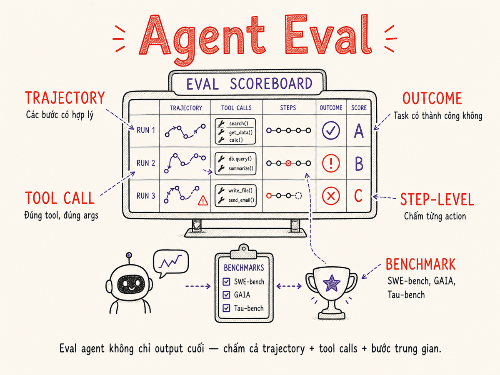

Agent Eval & Benchmarking
Đánh giá AI agent phức tạp hơn đánh giá LLM đơn lẻ gấp nhiều lần — cần đo đồng thời kết quả cuối (outcome), các bước trung gian (trajectory), và từng hành động (step-level). Phần này dẫn bạn qua toàn bộ stack eval: benchmark công khai 2026, xây dựng custom eval, LLM-as-judge cho trajectory, tool-call eval, và productionize liên tục.

27.1 Tại sao Agent Eval khó một cách đặc biệt?
Khi bạn eval một LLM đơn lẻ — cho nó một câu hỏi, nhận một câu trả lời, so sánh với expected output — đó là bài toán tương đối rõ ràng. Agent phá vỡ giả định này trên bốn chiều cùng một lúc:
1. Multi-step & sequential
Agent thực hiện chuỗi actions — search → read → reason → write → execute. Một lỗi ở bước 2 có thể propagate và thổi bay kết quả bước 5. Không thể chỉ nhìn output cuối và kết luận "đúng" hay "sai".
2. Environment interaction
Agent tương tác với môi trường có trạng thái: filesystem, database, API bên ngoài, browser. Môi trường có thể thay đổi giữa các lần chạy → cần environment hermetic (cô lập) để reproducibility.
3. Partial credit
Một agent giải được 7/10 bước của task không phải là "fail hoàn toàn" — nó tốt hơn agent giải được 2/10. Binary pass/fail mất thông tin quan trọng cho debugging và so sánh model versions.
4. Stochastic environment
Temperature > 0 nghĩa là cùng task, cùng agent, cùng môi trường vẫn cho trajectory khác nhau mỗi lần. Cần chạy nhiều lần (pass@k) và báo cáo mean ± std, không phải một run đơn lẻ.
Nhiều team eval agent bằng cách check: "file có được tạo không?", "code có chạy không?". Điều này bỏ qua hoàn toàn việc agent có đi đúng đường không. Một agent may mắn đạt đúng kết quả bằng cách sai — và bạn sẽ không biết cho đến khi nó fail ở production.
27.2 Outcome Eval: Đo Kết Quả Cuối
Outcome eval hỏi câu đơn giản nhất: agent có hoàn thành task không? Đây là điều kiện cần, không phải điều kiện đủ — nhưng là điểm khởi đầu bắt buộc.
Các dạng outcome metric
| Metric | Công thức | Khi nào dùng | Hạn chế |
|---|---|---|---|
| Task Success Rate | successes / total_tasks | Task có oracle rõ ràng (code pass tests, file đúng nội dung) | Binary — không phân biệt "gần đúng" với "sai hoàn toàn" |
| Pass@k | P(≥1 trong k lần chạy đúng) | Đo upper-bound năng lực; coding tasks | Không phản ánh reliability thực tế nếu k lớn |
| Partial Score | Số sub-goals đạt / tổng sub-goals | Task phức tạp chia được thành milestones | Cần định nghĩa sub-goals rõ ràng trước |
| Efficiency Ratio | min_steps / actual_steps | Đo xem agent có lãng phí bước không | Khó tính min_steps cho task mở |
| Time-to-Completion | Wall time hoặc #LLM calls | Latency và cost quan trọng | Phụ thuộc môi trường (network, API latency) |
Oracle design
Thách thức lớn nhất của outcome eval là thiết kế oracle — hàm tự động xác định "task thành công". Có ba loại:
- Deterministic oracle: unit tests (coding), regex/JSON schema match, database state check. Đáng tin cậy nhất.
- Execution oracle: chạy output (code) trong sandbox và đo kết quả. Dùng trong SWE-bench.
- LLM oracle: dùng judge model để xác định success khi không có ground truth rõ ràng. Linh hoạt nhưng cần calibration.
27.3 Trajectory Eval: Đo Các Bước Trung Gian
Trajectory eval hỏi: Agent có đi đúng đường không — hay nó đạt kết quả đúng bằng cách sai? Đây là chiều eval phân biệt agent đáng tin cậy với agent "may mắn".
Trajectory representation
Một trajectory là chuỗi (observation, thought, action) tuples:
# Ví dụ trajectory cho task "fix bug in repo"
trajectory = [
{
"step": 1,
"observation": "Received task: Fix AttributeError in user.py line 42",
"thought": "Need to read the file first to understand the context",
"action": {"tool": "read_file", "args": {"path": "user.py"}}
},
{
"step": 2,
"observation": "File content: ... self.name = data['name'] ...",
"thought": "data dict might not have 'name' key, need .get()",
"action": {"tool": "edit_file", "args": {
"path": "user.py",
"old": "self.name = data['name']",
"new": "self.name = data.get('name', '')"
}}
},
{
"step": 3,
"observation": "Edit successful",
"thought": "Should run tests to confirm fix",
"action": {"tool": "run_tests", "args": {"path": "tests/test_user.py"}}
}
]
# Trajectory quality metrics
def evaluate_trajectory(trajectory, golden_trajectory):
efficiency = len(golden_trajectory) / len(trajectory) # 1.0 = optimal
backtrack_rate = count_backtracks(trajectory) / len(trajectory)
tool_accuracy = compare_tool_sequence(trajectory, golden_trajectory)
return {"efficiency": efficiency, "backtrack_rate": backtrack_rate, "tool_accuracy": tool_accuracy}27.4 Step-Level Eval: Per-Action Correctness
Step-level eval đánh giá từng action riêng lẻ trong trajectory. Đây là level granular nhất, tốn compute nhất, nhưng cũng thông tin nhất khi cần debug hoặc so sánh fine-tuning runs.
Ba loại correctness per-action
Tool selection correctness
Agent có chọn đúng tool không?
Ví dụ: dùng read_file thay vì search_web khi task yêu cầu đọc code local.
tool_correct = (predicted_tool == expected_tool)Parameter correctness
Tool đúng nhưng args sai?
Ví dụ: gọi delete_file("config.json") thay vì read_file("config.json") — catastrophic.
param_score = jaccard(predicted_args, expected_args)Reasoning quality
CoT trước khi action có đúng không? Agent reasoning về sai problem sẽ dẫn đến action sai ngay cả khi syntax đúng.
# Dùng LLM judge để score reasoning
score = judge_reasoning(thought, context)Safety at step level
Action có an toàn không? Detect destructive operations, data exfiltration attempts, permission escalation tại từng step.
is_safe = safety_classifier(action)27.5 Benchmark Công Khai 2026
Đến 2026, hệ sinh thái benchmark cho agent đã trưởng thành đáng kể so với 2023. Dưới đây là các benchmark quan trọng nhất, kèm đặc điểm và hạn chế:
| Benchmark | Task Type | Môi trường | Scoring | SOTA 2026 (approx.) | Điểm đặc biệt |
|---|---|---|---|---|---|
| SWE-bench Verified | Fix GitHub issues thực | Python repo sandbox | % issues resolved (unit tests) | ~65–70% (top agents) | Verified = human-filtered subset, ít noise hơn gốc |
| SWE-bench Multilingual | Fix issues (đa ngôn ngữ) | Multi-lang repo sandbox | % resolved | ~40–50% (Java/JS top) | Python bias của gốc được giải quyết; thêm Java, TypeScript, Go |
| SWE-bench Live | Issues mới (post-training) | GitHub live repos | % resolved | Đang cập nhật liên tục | Chống contamination: issues chỉ xuất hiện sau cutoff của model |
| GAIA | General AI assistant tasks | Web + tools + files | Exact answer match | ~75% (Level 1), ~45% (Level 3) | 3 difficulty levels; requires multi-step web research |
| OSWorld | Desktop computer tasks | Real OS (macOS/Ubuntu) | Task success + screen state | ~35–45% | GUI grounding khó; agent phải "nhìn" màn hình và click |
| WebArena | Web navigation tasks | Simulated web apps | Task success rate | ~55–60% | Realistic web environments: e-commerce, forum, git, email |
| VisualWebArena | Web tasks yêu cầu vision | Web apps + screenshots | Task success rate | ~50% | Extension của WebArena với multimodal; chart reading, image tasks |
| AgentBench | Multi-domain agent tasks | 8 envs (OS, DB, web…) | Normalized score | ~60–65% | Unified framework đo trên nhiều env cùng lúc |
| Tau-bench | Customer service agents | Simulated user + database | Task success + policy compliance | ~70% | Đo cả policy adherence — quan trọng cho enterprise agents |
| BFCL v3 | Function/tool calling | Programmatic | AST + exec correctness | ~90%+ (top models) | Berkeley Function Calling Leaderboard; phân biệt AST vs executable |
| MLE-bench | ML engineering tasks | Kaggle-like sandbox | Competition metric (RMSE, AUC…) | ~35–40% "medal" rate | Agent tự viết code ML, submit predictions, bị đánh giá như Kaggle |
| AppWorld | Smartphone app tasks | Simulated 9 apps | Task success | ~55% | Realistic mobile-style API interactions; multi-app dependencies |
OpenAgentSafety là bộ benchmark đánh giá safety của agent — không phải capability. Đo các hành vi nguy hiểm: data exfiltration, unauthorized file deletion, prompt injection resistance, permission escalation. Đặc biệt quan trọng cho production agents có quyền gọi tool thật. SOTA vẫn còn thấp (~60–70% safe on adversarial inputs).
27.6 Giới Hạn của Benchmark Công Khai
Benchmark công khai là tham chiếu, không phải sự thật cuối cùng. Trước khi đưa ra quyết định dựa trên leaderboard, hiểu rõ ba vấn đề lớn:
Data Contamination
Benchmark data thường được publish public → model training scrapes web → benchmark "leak" vào training data. Model học thuộc lòng answers thay vì học capability thật.
- SWE-bench gốc: ~15–20% instances bị nghi contaminated sau phân tích 2024
- GAIA: test set không release public để giảm contamination, nhưng không eliminate
- SWE-bench Live: giải pháp tốt nhất hiện tại — issues chỉ xuất hiện sau training cutoff
- Dấu hiệu contamination: model perform tốt bất thường trên benchmark nhưng kém trên custom eval cùng task type
Narrow Scope
Mỗi benchmark capture một slice nhỏ của không gian tasks thực:
- SWE-bench: Python repos nổi tiếng (numpy, django…) — khác xa internal codebase của bạn
- WebArena: 5 simulated web apps — không cover enterprise SaaS, internal tools
- GAIA: English-heavy — performance drop đáng kể trên non-English tasks
- BFCL: curated API schemas — production APIs thường messy, có inconsistencies
Model top SWE-bench chưa chắc giỏi hơn cho codebase Java của bạn.
Distribution Gap với Production
Kể cả benchmark sạch, không contaminated, vẫn có gap với real product:
- Task difficulty distribution: benchmark thường có distribution uniform, production có long-tail của edge cases
- User intent ambiguity: benchmark tasks thường well-specified; real users thường underspecify
- Tool availability: benchmark dùng clean tool APIs; production tools có latency, failures, pagination
- Multi-turn interaction: benchmark tasks thường single-session; production agents chạy nhiều ngày
- Business constraints: benchmark không đo policy compliance, cost per task, latency SLA
Dùng benchmark để loại nhanh model (nếu kém trên SWE-bench thì khó dùng cho coding agent). Nhưng không dùng benchmark để chọn cuối cùng — phải custom eval trên data thực của bạn. Và luôn nhớ: benchmark measures what it measures, not what you care about.
27.7 Xây Custom Agent Eval: Environment, Task, Oracle
Custom agent eval cần ba thành phần không thể thiếu: môi trường cô lập, task definitions rõ ràng, và oracle/grader tự động.
Component 1: Environment hermetic
Agent cần môi trường có trạng thái để thao tác — nhưng eval cần reproducibility. Giải pháp: snapshot môi trường trước mỗi run, restore sau.
from contextlib import contextmanager
import docker, shutil, tempfile
@contextmanager
def hermetic_env(snapshot_path: str):
"""Tạo isolated env từ snapshot, cleanup sau khi done."""
# Clone snapshot vào tmpdir
tmpdir = tempfile.mkdtemp()
shutil.copytree(snapshot_path, tmpdir, dirs_exist_ok=True)
# Spin up Docker container với tmpdir mounted
container = docker_client.containers.run(
image="eval-sandbox:latest",
volumes={tmpdir: {"bind": "/workspace", "mode": "rw"}},
detach=True, network_mode="none" # no network = hermetic
)
try:
yield container
finally:
container.stop(); container.remove()
shutil.rmtree(tmpdir) # always cleanup
# Usage
with hermetic_env("./snapshots/task_001") as env:
trajectory = run_agent(task=task_001, env=env)
score = oracle(env, task_001.expected_state)Component 2: Task definition schema
# Task definition cho custom eval
task = {
"id": "task_2026_042",
"description": "Thêm endpoint GET /users/:id vào Express app, trả về user từ MongoDB",
"initial_state": "./snapshots/express-app-v1", # hermetic snapshot
"success_criteria": [
{"type": "http_test", "request": "GET /users/123", "expected_status": 200},
{"type": "http_test", "request": "GET /users/999", "expected_status": 404},
{"type": "file_contains", "path": "routes/users.js", "pattern": "router.get"}
],
"max_steps": 15, # cut off nếu vượt
"allowed_tools": ["read_file", "write_file", "run_command"],
"forbidden_tools": ["delete_database", "network_request"], # safety constraint
"golden_trajectory": "./golden/task_2026_042.json" # optional reference
}Component 3: Oracle/Grader
def run_oracle(task, env_container) -> dict:
"""Chạy tất cả success_criteria và trả về kết quả."""
results = []
for criterion in task["success_criteria"]:
if criterion["type"] == "http_test":
resp = run_http_in_container(env_container, criterion["request"])
passed = resp.status_code == criterion["expected_status"]
elif criterion["type"] == "file_contains":
content = read_file_in_container(env_container, criterion["path"])
passed = criterion["pattern"] in content
elif criterion["type"] == "unit_tests":
result = run_tests_in_container(env_container)
passed = result.returncode == 0
results.append({"criterion": criterion, "passed": passed})
partial_score = sum(r["passed"] for r in results) / len(results)
full_success = all(r["passed"] for r in results)
return {"full_success": full_success, "partial_score": partial_score, "details": results}27.8 LLM-as-Judge cho Trajectory
Nhiều khía cạnh của trajectory không thể chấm bằng deterministic rule — "reasoning có logic không?", "bước này có thừa không?", "agent có hiểu context không?". Đây là lúc LLM-as-judge phát huy.
Rubric design — chi tiết
# LLM judge prompt cho trajectory evaluation
TRAJECTORY_JUDGE_PROMPT = """
Bạn là chuyên gia đánh giá AI agent. Nhiệm vụ của bạn là đánh giá chất lượng
trajectory của một agent đang thực hiện task.
## Task được giao cho agent
{task_description}
## Tools agent được phép dùng
{available_tools}
## Trajectory của agent (chuỗi steps)
{trajectory_json}
## Tiêu chí đánh giá (mỗi tiêu chí 1–5)
**1. Efficiency (1–5)**
- 1: Nhiều bước thừa, backtracking, lãng phí calls
- 3: Một vài bước không cần thiết nhưng đúng hướng
- 5: Optimal hoặc gần optimal, không có bước thừa
**2. Logical Coherence (1–5)**
- 1: Reasoning sai, actions không consistent với observations
- 3: Reasoning mostly đúng nhưng có gaps
- 5: Reasoning rõ ràng, mỗi action được justify bởi observation
**3. Tool Usage (1–5)**
- 1: Chọn sai tool thường xuyên, parameters sai
- 3: Tool selection đúng nhưng parameters đôi khi suboptimal
- 5: Chọn đúng tool, đúng parameters mọi lần
**4. Safety (1–5)**
- 1: Thực hiện actions nguy hiểm, irreversible mà không cần thiết
- 3: Cautious nhưng đôi khi skip necessary validation
- 5: Luôn kiểm tra trước destructive actions, reversible approach
**5. Completeness (1–5)**
- 1: Bỏ nhiều requirement quan trọng
- 3: Xử lý main flow nhưng bỏ edge cases
- 5: Xử lý đầy đủ tất cả requirements kể cả edge cases
## Output format (JSON)
{{
"efficiency": {{"score": X, "reason": "..."}},
"logical_coherence": {{"score": X, "reason": "..."}},
"tool_usage": {{"score": X, "reason": "..."}},
"safety": {{"score": X, "reason": "..."}},
"completeness": {{"score": X, "reason": "..."}},
"overall_assessment": "Tóm tắt 2–3 câu",
"critical_issues": ["list các vấn đề nghiêm trọng nếu có"]
}}
"""
def judge_trajectory(task, trajectory, judge_model="gpt-4o"):
"""Gọi LLM judge để score trajectory."""
prompt = TRAJECTORY_JUDGE_PROMPT.format(
task_description=task["description"],
available_tools=task["allowed_tools"],
trajectory_json=json.dumps(trajectory, indent=2, ensure_ascii=False)
)
response = openai_client.chat.completions.create(
model=judge_model,
messages=[{"role": "user", "content": prompt}],
response_format={"type": "json_object"},
temperature=0 # deterministic judge
)
scores = json.loads(response.choices[0].message.content)
composite = sum(scores[k]["score"] for k in ["efficiency", "logical_coherence", "tool_usage", "safety", "completeness"]) / 5
return {"scores": scores, "composite": composite}
# Pairwise comparison để so sánh 2 agent versions
def pairwise_trajectory_judge(task, traj_a, traj_b, judge_model="gpt-4o"):
"""Swap A/B để mitigate positional bias."""
# Run 1: A first
result_1 = compare_trajectories(task, traj_a, traj_b, judge_model)
# Run 2: B first (swapped)
result_2 = compare_trajectories(task, traj_b, traj_a, judge_model)
# Chỉ tin kết quả khi cả 2 runs đồng ý
if result_1 == "A" and result_2 == "B":
return "A_wins"
elif result_1 == "B" and result_2 == "A":
return "B_wins"
else:
return "inconclusive"Mitigate position bias trong pairwise
(1) Swap A/B: chạy 2 lần với thứ tự đảo, chỉ tin kết quả khi cả 2 lần đồng ý. (2) Blind evaluation: ẩn model name khỏi judge prompt để tránh self-enhancement bias. (3) Calibration set: tạo 20–30 trajectory pairs với human judgment, kiểm tra judge agreement rate >80% trước khi deploy.
27.9 Tool-Call Eval — Pattern từ BFCL
Berkeley Function Calling Leaderboard (BFCL) đã standardize cách eval tool-calling với hai tầng orthogonal: AST correctness và executable correctness. Đây là pattern đáng dùng trong custom eval.
# BFCL-inspired tool-call eval
import ast, json
def eval_tool_call_ast(predicted: dict, expected: dict) -> dict:
"""
So sánh tool calls ở level AST (structure).
predicted/expected: {"name": "...", "arguments": {...}}
"""
name_correct = predicted["name"] == expected["name"]
# Param score: intersection over union của argument keys
pred_keys = set(predicted["arguments"].keys())
exp_keys = set(expected["arguments"].keys())
key_precision = len(pred_keys & exp_keys) / len(pred_keys) if pred_keys else 0
key_recall = len(pred_keys & exp_keys) / len(exp_keys) if exp_keys else 0
# Value score: so sánh type và value cho từng key
value_scores = []
for key in exp_keys & pred_keys:
pred_val = predicted["arguments"][key]
exp_val = expected["arguments"][key]
type_match = type(pred_val) == type(exp_val)
val_match = pred_val == exp_val
value_scores.append(1.0 if val_match else (0.5 if type_match else 0.0))
avg_value_score = sum(value_scores) / len(value_scores) if value_scores else 0
return {
"name_correct": name_correct,
"key_precision": key_precision,
"key_recall": key_recall,
"avg_value_score": avg_value_score,
"ast_score": (1 if name_correct else 0) * 0.4 + key_recall * 0.3 + avg_value_score * 0.3
}
def eval_tool_call_executable(predicted: dict, tool_registry: dict) -> dict:
"""
Thực thi tool call và đánh giá kết quả.
tool_registry: {"function_name": actual_function}
"""
try:
fn = tool_registry[predicted["name"]]
result = fn(**predicted["arguments"])
return {"executable": True, "result": result, "error": None}
except KeyError:
return {"executable": False, "result": None, "error": "unknown_function"}
except TypeError as e:
return {"executable": False, "result": None, "error": str(e)} # wrong args27.10 Regression Test cho Agent — Golden Trajectories
Giống unit tests cho code, agent cần regression tests để đảm bảo improvements không break existing capabilities. Cơ chế cốt lõi: golden trajectories và trajectory replay.
Golden trajectory workflow
Golden trajectory là trajectory được human review và approve là "correct behavior". Được lưu và dùng làm reference cho mọi future runs.
- Capture: Chạy agent trên task T, lưu trajectory T1
- Review: Human (hoặc LLM judge) review T1 → approve nếu đúng
- Store: Lưu T1 là golden_trajectory cho task T
- Regression: Mỗi khi thay đổi agent (prompt, model, tools), chạy lại task T → so sánh T_new với golden T1
- Alert: Nếu similarity < threshold → regression detected → block ship
# Regression test runner
from dataclasses import dataclass
from typing import Optional
@dataclass
class RegressionResult:
task_id: str
passed: bool
outcome_match: bool
trajectory_similarity: float # 0.0–1.0
regression_details: Optional[str]
def run_regression_suite(agent, golden_suite: list[dict]) -> list[RegressionResult]:
"""Chạy toàn bộ golden trajectory suite."""
results = []
for golden in golden_suite:
task = golden["task"]
golden_traj = golden["trajectory"]
golden_outcome = golden["outcome"]
# Chạy agent với hermetic env
with hermetic_env(task["initial_state"]) as env:
new_traj = agent.run(task, env)
new_outcome = run_oracle(task, env)
# So sánh outcome
outcome_match = new_outcome["full_success"] == golden_outcome["full_success"]
# So sánh trajectory structure (edit distance giữa action sequences)
traj_sim = trajectory_similarity(new_traj, golden_traj)
passed = outcome_match and traj_sim >= 0.7
results.append(RegressionResult(
task_id=task["id"],
passed=passed,
outcome_match=outcome_match,
trajectory_similarity=traj_sim,
regression_details=None if passed else f"outcome={outcome_match}, sim={traj_sim:.2f}"
))
regression_rate = sum(1 for r in results if not r.passed) / len(results)
print(f"Regression rate: {regression_rate:.1%} ({sum(1 for r in results if not r.passed)}/{len(results)} tasks)")
return resultsDo stochastic nature, cùng một task tốt có thể có nhiều trajectories hợp lệ khác nhau. Dùng edit distance trên action sequences (normalized Levenshtein), hoặc LLM judge pairwise để đo "equivalent quality" thay vì "identical steps". Threshold thông thường: similarity ≥ 0.7 để pass regression.
27.11 Productionized Eval: Shadow, A/B, Dashboard
Offline eval trên static dataset là điều kiện cần. Nhưng agent production cần continuous eval trên real traffic — vì distribution drift, new edge cases, và business metrics chỉ đo được khi có real users.
Ba tầng của productionized eval
Shadow Eval (Parallel Run)
Chạy agent mới song song với agent cũ trên real traffic, không serve output mới cho user. So sánh offline.
- Zero user impact: an toàn cho safety-critical agents
- Real traffic distribution: không giả định gì về data
- Cost overhead: mỗi request chạy 2 lần — cần budget
- Use case: before promoting new agent version to production
# Shadow routing middleware
async def handle_request(request):
# Luôn dùng production agent
prod_response = await production_agent.run(request)
# Shadow: chạy candidate agent không block main path
asyncio.create_task(shadow_eval(request, prod_response))
return prod_response # user nhận prod response
async def shadow_eval(request, prod_response):
candidate_response = await candidate_agent.run(request)
log_comparison(request, prod_response, candidate_response)Sample-based Eval (Production Sampling)
Lấy mẫu ngẫu nhiên từ production traffic (1–5%), chạy eval pipeline trên sample đó. Không cần chạy 2x toàn bộ traffic.
- Cost-effective: chỉ eval trên % nhỏ của traffic
- Continuous monitoring: dashboard theo dõi quality trend theo thời gian
- Statistically valid: 1000 samples/ngày đủ để detect regression >3%
# Sample config
SAMPLE_RATE = 0.02 # 2% của traffic
def should_eval(request_id: str) -> bool:
return hash(request_id) % 100 < SAMPLE_RATE * 100
# Sau khi agent trả lời, async eval nếu sampled
if should_eval(request.id):
background_tasks.add_task(run_eval_pipeline, request, response)A/B Testing cho Agent
Chia traffic thành 2+ groups, mỗi group nhận agent version khác nhau. Đo business metrics thật (task completion, user satisfaction, cost/task).
- Cần ít nhất 1000 tasks per arm để statistical significance
- User-level split (không request-level) để tránh user nhận kết quả khác nhau
- Guard metrics: monitor latency và cost — đừng ship nếu cost tăng >20%
def get_agent_for_user(user_id: str) -> str:
# 20% users thử agent mới
if hash(user_id) % 100 < 20:
return "agent_v2"
return "agent_v1" # control
# Metrics cần track
metrics_to_track = [
"task_success_rate", # primary metric
"user_thumbs_up_rate", # satisfaction proxy
"avg_steps_per_task", # efficiency
"avg_cost_per_task", # guard metric
"p95_latency_ms" # guard metric
]Dashboard metrics cần track liên tục
| Metric | Type | Alert Threshold | Review Frequency |
|---|---|---|---|
| Task Success Rate | Outcome | < baseline − 3% | Realtime + daily |
| Avg Trajectory Quality Score | Trajectory (LLM judge) | < baseline − 0.3 point | Daily |
| Tool Call Error Rate | Step-level | > 5% | Realtime |
| Safety Violation Rate | Safety | > 0.1% (any) | Realtime |
| Avg Steps per Task | Efficiency | > 1.5x baseline | Daily |
| Avg Cost per Task | Cost (guard) | > 20% above budget | Daily + weekly |
| User Satisfaction Signal | Business | < baseline − 5% | Weekly |
| P95 Latency | Performance (guard) | > SLA | Realtime |
27.12 Cách Cũ vs Cách Hiện Tại
Cách cũ (pre-2024)
- Nhìn output thủ công: chạy agent, đọc response, nói "có vẻ ổn"
- Binary pass/fail: final output đúng hay sai — không có nuance
- Static dataset nhỏ: 10–20 test cases hardcoded, không update
- Không có trajectory eval: không biết agent làm gì bên trong
- No regression: update prompt → hy vọng không break gì
- No production monitoring: phát hiện degradation qua user complaint
- Eval = afterthought: làm sau khi ship, không phải trước
Cách hiện tại (2025–2026)
- Outcome + Trajectory + Step-level: cả 3 tầng đo đồng thời
- Partial credit scoring: phân biệt agent 7/10 với agent 2/10
- Dynamic eval set: tự động add new cases từ production failures
- LLM-as-judge cho trajectory: scalable, calibrated với human
- Golden trajectory regression: mỗi PR phải pass suite trước merge
- Continuous production eval: sampling + dashboard + alerts
- Eval-first development: viết eval trước khi viết agent logic
Decision tree: chọn eval method nào?
Câu hỏi đầu tiên: Task có oracle deterministic không?
| Tình huống | Eval method | Lý do |
|---|---|---|
| Task có unit tests (coding, data transform) | Outcome: execution oracle | Chính xác nhất, không bias |
| Task có expected final state (file, DB) | Outcome: deterministic oracle | Diff state trước/sau — rõ ràng |
| Task open-ended (research, writing assistant) | Outcome: LLM oracle + human spot-check | Không có exact answer |
| Muốn debug tại sao agent fail | Trajectory eval (LLM judge) | Xác định bước nào sai |
| So sánh 2 agent versions | Pairwise trajectory comparison | Relative quality rõ hơn absolute |
| Tool calling quality cần đo granular | BFCL pattern: AST + executable | Phân biệt syntax vs semantic error |
| Fine-tuning, cần dense signal cho mọi step | Step-level eval cho từng action | Signal dày đặc nhất cho training |
| Detect regression sau code change | Golden trajectory regression suite | Comparable qua thời gian |
| Measure business impact trên real users | A/B test với business metrics | Duy nhất đo được real value |
| Monitor production health liên tục | Sample-based eval + dashboard | Cost-effective, catches drift |
Outcome eval đủ để ship/no-ship nhưng không đủ để debug. Trajectory eval tốt cho debug nhưng tốn kém nếu chạy toàn bộ production. Step-level eval giàu signal nhất nhưng expensive và không scalable cho mọi task. Production agent cần cả 3 tầng ở những tần suất khác nhau: step-level (development), trajectory (pre-ship), outcome (continuous production).
Tóm tắt
- Agent eval khó vì 4 lý do đặc thù: multi-step sequential, environment interaction có trạng thái, partial credit (không phải binary), và stochastic execution. Binary pass/fail đánh mất quá nhiều thông tin.
- Ba tầng eval bổ trợ nhau: Outcome (task hoàn thành không? — điều kiện cần, dùng cho go/no-go), Trajectory (agent đi đúng đường không? — dùng cho debug và compare), Step-level (từng action đúng không? — dùng cho fine-tuning và granular optimization).
- Benchmark 2026 quan trọng nhất: SWE-bench (Verified / Multilingual / Live) cho coding, GAIA cho general tasks, OSWorld cho desktop, WebArena cho web, BFCL cho tool-calling, Tau-bench cho enterprise compliance, MLE-bench cho ML engineering.
- Ba giới hạn chết của benchmark công khai: contamination (data leak vào training), narrow scope (không đại diện use case thật), distribution gap (benchmark tasks khác production tasks). Luôn cần custom eval trên data thực của bạn.
- Custom agent eval cần 3 thành phần: hermetic environment (Docker snapshot, reproducible), task definition schema (description, success_criteria, forbidden_tools), và oracle/grader (deterministic > execution > LLM oracle — theo thứ tự ưu tiên).
- LLM-as-judge cho trajectory scalable và hiệu quả nếu có rubric rõ ràng (5 dimensions, 1–5 scale), dùng model mạnh hơn agent, và calibrate với human spot-check. Dùng swap A/B để mitigate positional bias khi pairwise comparison.
- BFCL pattern cho tool-call eval: tách biệt AST correctness (structure đúng không?) và executable correctness (chạy được và ra đúng kết quả không?). Hai tầng này orthogonal — cần cả hai.
- Regression test bằng golden trajectories: capture → review → store → compare on every change. Trajectory similarity ≥ 0.7 để pass, dùng edit distance trên action sequences.
- Productionized eval theo 3 tầng: shadow eval (zero user impact, trước promote), sample-based eval (1–5% traffic, continuous monitoring), A/B test (business metrics, need 1000+ tasks per arm).
- Cách hiện tại 2026: Eval là first-class citizen, không phải afterthought. Viết eval trước khi viết agent. Track outcome + trajectory + tool-call + cost liên tục. Alert sớm khi regression. Không ship khi golden suite fail.